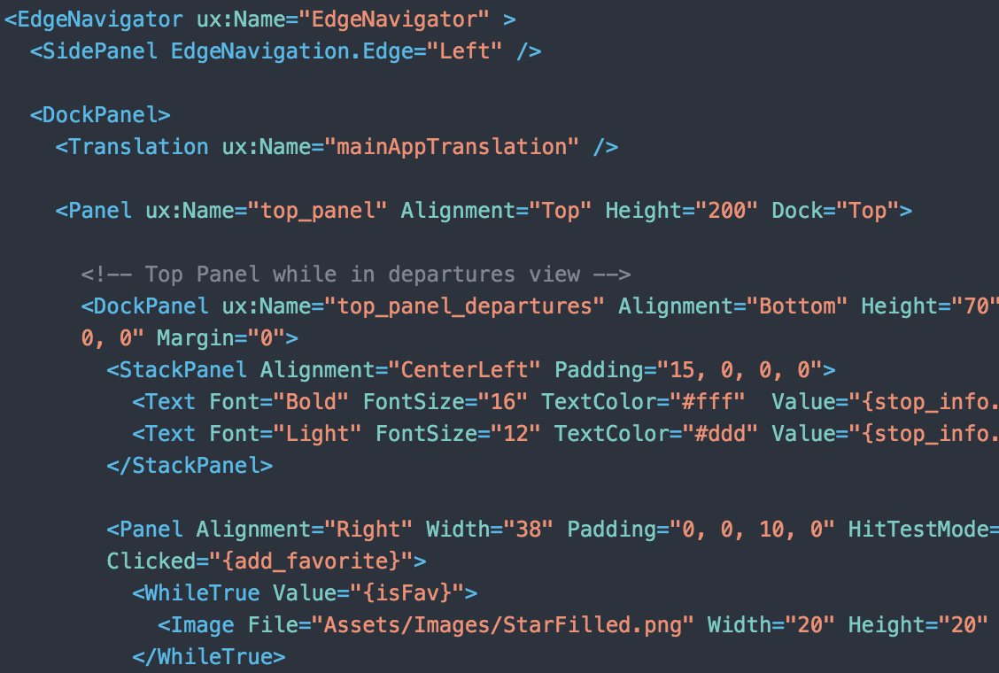
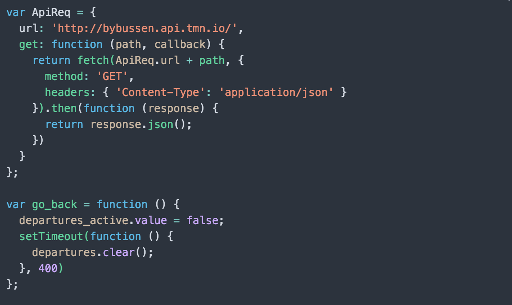

Native apps med Fuse
Tri Nguyen
Lightning Talks
Native apps med Fuse
Tri Nguyen |
tri.nguyen@bekk.no
web
native
native + web
native++
Fuse
UX Markup
JavaScript
Fuse Libraries
Uno Compiler
UX Markup
JavaScript


UNO
C# syntax
Kompileres til C++, JavaScript eller .NET
Støtter inline C, C++, Objective-C, Java og JavaScript
Foreign code
... om du savner noe i Fuse
Native UI | OpenGL ES
La oss skrive litt kode
Hvorfor Fuse?
Enkelt å komme i gang
Native (kode og UI)
Sanntid forhåndsvisning
Hardware-aksellerert
fusetools.com
Takk!
@itmn
 fusetools.com
fusetools.com